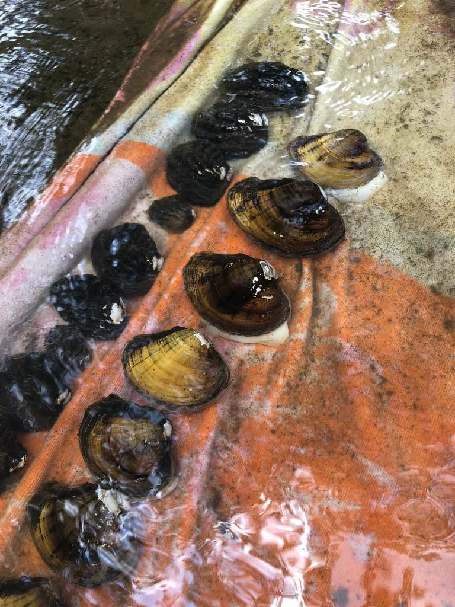
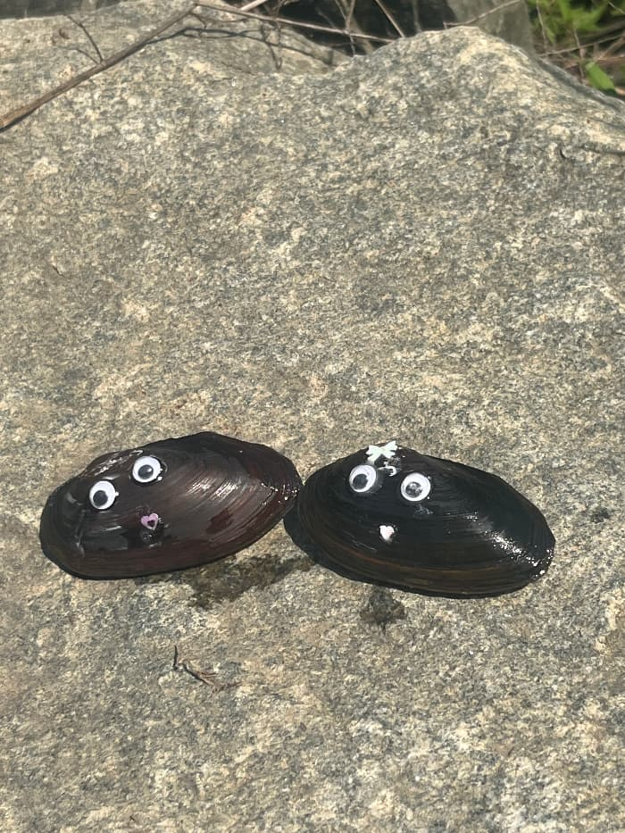

Uniting researchers, agencies, and advocates to restore the lifeblood of Atlantic slope rivers.
Freshwater mussels are the "silent engineers" of our ecosystems...
We focus on the unique challenges of Atlantic slope drainages—from the Delaware to the Altamaha.

Standardizing surveying protocols and sharing demographic data.
Coordinating augmentation and reintroduction efforts.
Raising public awareness through community science.
Our community outreach program invites the public to learn about mussel tagging for river restorations.
